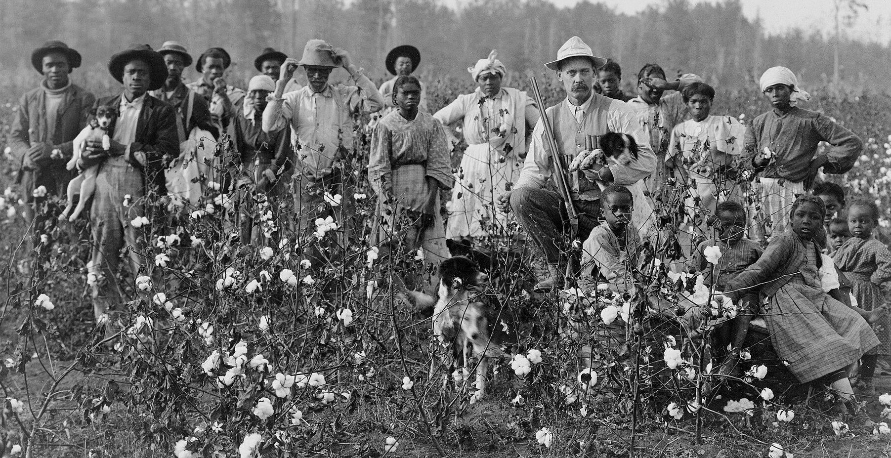
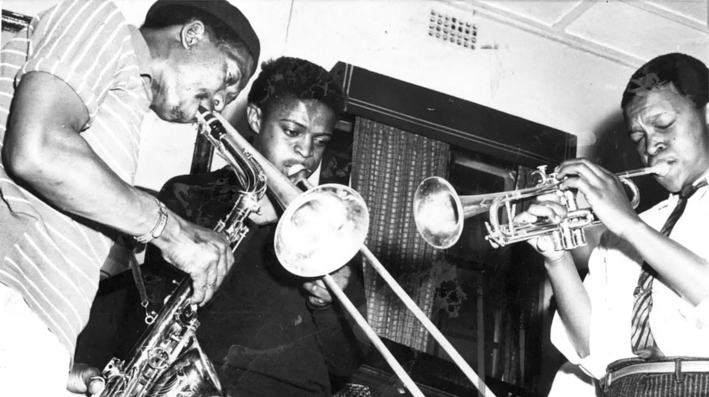
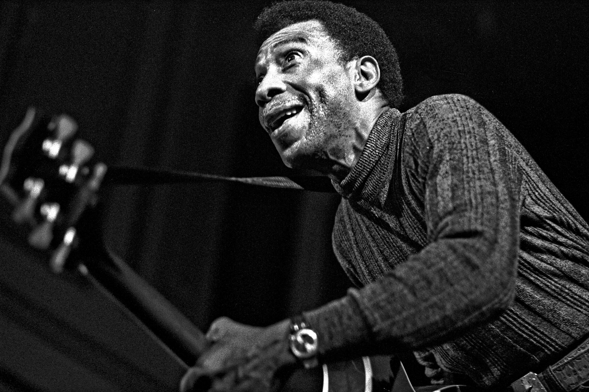
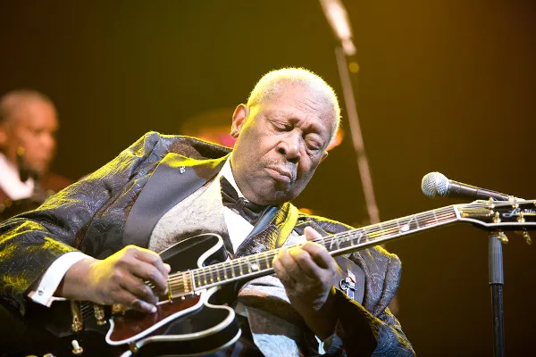
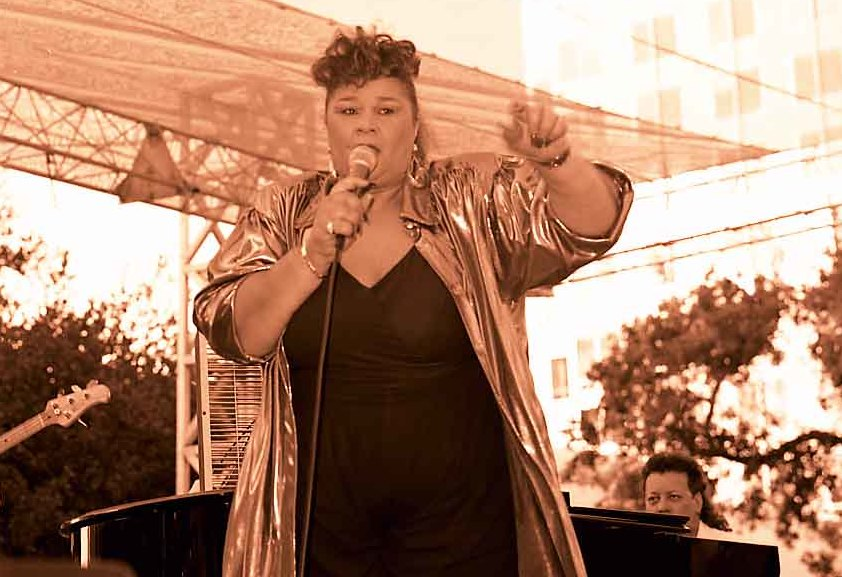

O blues, assim como outros gêneros musicais, como o country e o jazz, nasceu da população negra dos Estados Unidos, mais precisamente no século XIX, em plantações de algodão no Sul do país norte-americano.
Os negros escravizados costumavam cantar enquanto trabalhavam. As músicas tinham influências de ritmos africanos e cantos religiosos. Originalmente, uma pessoa cantava e era seguida pelas demais, o que ficou conhecido como call and response, “chamada e resposta”, em tradução literal.
A música africana foi combinada com a folk music da Europa, produzindo então o blues. Em seu surgimento, era comum que a maioria dos cantores de blues fosse negra. O gênero só se tornou famoso após a Guerra Civil dos EUA, quando os escravizados foram emancipados. A partir de então, o blues migrou para as cidades do país, tornando-se também influente entre a população branca.
O blues é um gênero que nasceu da alma e da resistência, carregando em sua essência uma profunda carga emocional. O próprio nome do estilo já revela sua natureza: em inglês, "blues" remete a sentimentos como melancolia e tristeza, sejam elas causadas pelas dificuldades do cotidiano, por perdas pessoais ou por desilusões amorosas. Essa sonoridade melancólica é construída através das chamadas Blue Notes — notas tocadas de forma levemente "achatada" ou desafinada para criar uma tensão emocional única.

Ao longo de sua popularização, diversos estilos surgiram, como o Delta Blues, que apareceu no Mississippi por volta de 1920. Nessa vertente, a guitarra e a harmonia servem como base para acompanhar vocais intensos e rítmicos, marcados por letras simples e uma entrega visceral dos cantores.
Tecnicamente, o blues se organiza de forma muito característica:

T-Bone Walker tocando guitarra durante apresentação em festival de blues em 1972.
O cantor e guitarrista T-Bone Walker inseriu novos elementos no blues, como a guitarra e as distorções.
Nos anos seguintes, o blues se tornou cada vez mais popular nos Estados Unidos. Nesse período, ele começou a se relacionar com outro gênero musical, o jazz. Pode-se dizer que um estilo influenciou o outro, já que ambos eram populares em clubes de música e na cultura preta e urbana.
Foi nessa época que surgiram grandes nomes do blues, como Elmore James, Howlin' Wolf, TBone Walker e B. B. King. A essa altura, o estilo estava em todo território dos EUA, inclusive no Norte, em especial em Chicago. A partir de então, o blues sofreu alterações, ganhando novos ritmos, instrumentos e características rítmicas, o que resultou em gêneros como o rock e o R&B (rhythm and blues).
T-Bone Walker foi um dos grandes nomes do ritmo e da música da época. Pioneiro, trouxe a guitarra de rock e sua técnica para o blues, colocando também amplificadores e um pouco de distorção. Já em 1960, o blues também começou a se popularizar na Europa, em especial no Reino Unido, no País de Gales.
Além de T-Bone Walker, um dos grandes nomes do blues foi B. B. King. O cantor e guitarrista estadunidense é reconhecido não apenas como um dos artistas que ajudaram a desenvolver o gênero, mas também como um dos nomes que o tornaram popular.

Nascido no Mississippi, o próprio nome artístico do cantor faz alusão ao gênero, já que o B. B. se refere a Blues Boy, “Garoto do Blues”, em tradução literal. Entre seus sucessos, estão “Woke up this morning”, “Everyday I have the blues”, “Sweet sixteen” e “The thrill is gone”

Etta James, cantora norte-americana de blues segurando um microfone durante apresentação.
Etta James é mundialmente conhecida como uma das maiores vozes femininas do blues.
Se B. B. King foi uma das principais vozes masculinas do blues, Etta James certamente foi uma das grandes vozes femininas do gênero. A norteamericana foi uma famosa cantora de blues, soul e R&B. Tornou-se mundialmente famosa pela voz potente e por suas letras melancólicas. Entre seus sucessos no gênero, estão “At last”, “I'll take care of you” e “I'd rather go blind”.
Mais do que um gênero musical, o blues é a raiz que sustenta quase toda a música popular moderna — do rock ao jazz, sua influência é inegável. Ele não trata apenas de notas ou acordes, mas de um sentimento profundo que transforma dor em arte eterna. Através de sua estrutura de 12 compassos e da entrega honesta de seus intérpretes, o blues ressoa através das décadas como um símbolo de resistência cultural e expressão humana. Entender o blues é perceber que, enquanto houver histórias para contar e emoções para sentir, esse gênero permanecerá vivo, pulsante e essencial.
Se inscreva aqui para receber futuras atualizações